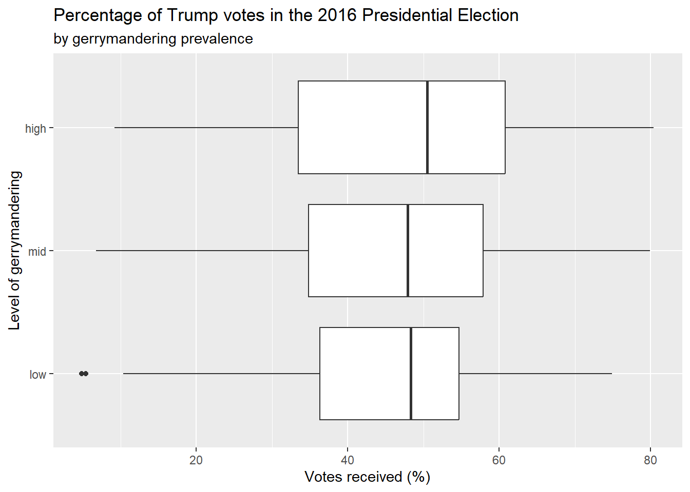
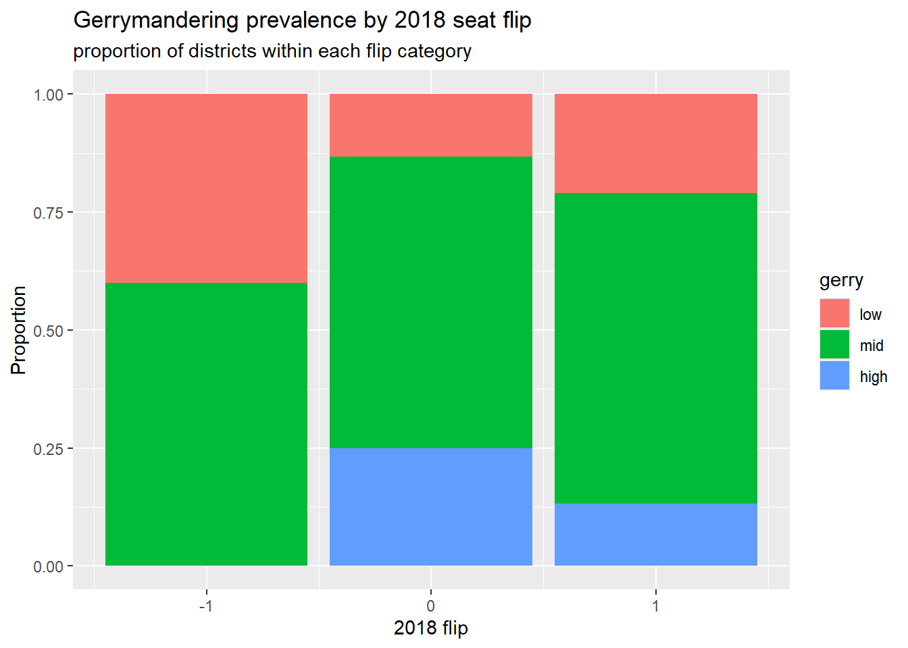
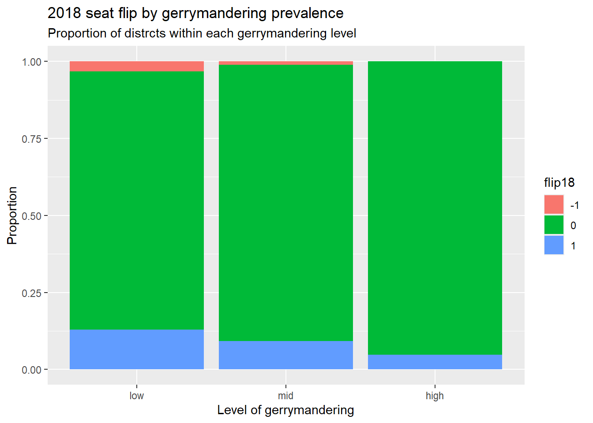
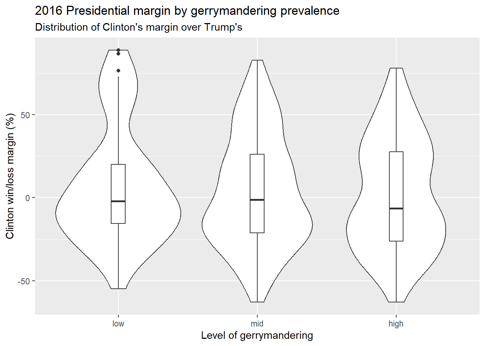

library(tidyverse)
library(usdata)
library(sjPlot)
library(gtsummary)
gerrymander <- usdata::gerrymanderAE03 - Exploring gerrymandring
Getting started
Load the tidyverse, usdata, and sjPlot packages, and get the gerrymander data out of the usdata package. View the data using glimpse.
1. Congressional districts per state
Which state has the most congressional districts? The least? How many congressional districts are there in this state? Use functions such as table, tbl_summary or count.
gerrymander %>%
count(state) %>%
arrange(desc(n))# A tibble: 50 × 2
state n
<chr> <int>
1 CA 53
2 TX 36
3 FL 27
4 NY 27
5 IL 18
6 PA 18
7 OH 16
8 GA 14
9 MI 14
10 NC 13
# ℹ 40 more rows- CA has the most congressional districts.
gerrymander %>%
count(state) %>%
arrange(n)# A tibble: 50 × 2
state n
<chr> <int>
1 AK 1
2 DE 1
3 MT 1
4 ND 1
5 SD 1
6 VT 1
7 WY 1
8 HI 2
9 ID 2
10 ME 2
# ℹ 40 more rows- AK, DE, MT, ND, SD, VT, and WY have the least congressional districts.
2. Districts at the tails
Make side-by-side box plots of percent of vote received by Trump in the 2016 Presidential Election by prevalence of gerrymandering. Identify any Congressional Districts that are potential outliers — points that fall well outside the whiskers of their box, meaning that district’s Trump vote share was unusually high or low compared to other districts with the same gerrymandering prevalence. What information can you share about them?
ggplot(gerrymander, aes(x = trump16, y = gerry)) +
geom_boxplot() +
labs(
x = "Votes received (%)",
y = "Level of gerrymandering",
title = "Percentage of Trump votes in the 2016 Presidential Election",
subtitle = "by gerrymandering prevalence"
) 
gerrymander %>%
filter(trump16 < 10, gerry == "low") %>%
select(-state, -dem18, -gerry)# A tibble: 2 × 9
district last_name first_name party16 clinton16 trump16 dem16 party18 flip18
<chr> <chr> <chr> <chr> <dbl> <dbl> <dbl> <chr> <dbl>
1 NY-13 Espaillat Adriano D 92.3 5.4 1 D 0
2 NY-15 Serrano Jose D 93.8 4.9 1 D 0- The congressional districts that are potential outliers are NY-13 and NY-15. They had unusually low Trump vote shares, with Trump receiving 5.4% of NY-13 votes and 4.9% of NY-15 votes. Both districts had democratic election winners, Adriano Espaillat (NY-13) and Jose Serrano (NY-15).
3. Gerrymandering and flipping
This relationship can be looked at from two directions — does gerrymandering predict a 2018 flip, and does a 2018 flip predict gerrymandering? Support both with a visualization and summary statistics. The plot answers “what does the mix look like within each group?”; the table gives the exact proportions the plot is showing. Write 1-2 bullet points about what you noticed from each plot. Use specific numbers in your answer.
Direction 1: Is a Congressional District more likely to have high prevalence of gerrymandering if a Democrat was able to flip the seat in the 2018 election? To compare the breakdown of gerrymandering prevalence within each flipped group, make sure flip18 is on the x axis and that your percents add up to 100% within each category.
ggplot(gerrymander, aes(x = flip18, fill = gerry)) +
geom_bar(position = "fill") +
labs(
x = "2018 flip",
y = "Proportion",
title = "Gerrymandering prevalence by 2018 seat flip",
subtitle = "proportion of districts within each flip category"
)
gerrymander %>%
group_by(flip18) %>%
summarise(
low = 100 * sum(gerry == "low") / n(),
mid = 100 * sum(gerry == "mid") / n(),
high = 100 * sum(gerry == "high") / n()
)# A tibble: 3 × 4
flip18 low mid high
<dbl> <dbl> <dbl> <dbl>
1 -1 40 60 0
2 0 13.3 61.7 25
3 1 21.1 65.8 13.2This data suggests that Congressional Districts are more likely to have
highlevels of gerrymandering if the Democrat was unable to flip the seat. Whilemidlevels of gerrymandering have the majority in both cases, flipped seats are more likely to correlate tolowlevels (21.05%) of gerrymandering overhighlevels (13.16%), while unflipped seats are more likely to correlate tohighlevels (25.00%) of gerrymandering overlowlevels (13.27%).(It is unclear what a value of -1 represents for
flip18, as it is not explicitly mentioned in the documentation).
Direction 2: Is a Congressional District more likely to be flipped to a Democratic seat if it has high prevalence of gerrymandering, or low prevalence? Same two variables, just flipped — so now gerry is on the x-axis. Again, make sure your percents add up to 100% within each category.
ggplot(gerrymander, aes(x = gerry, fill = factor(flip18))) +
geom_bar(position = "fill") +
labs(
x = "Level of gerrymandering",
y = "Proportion",
fill = "flip18",
title = "2018 seat flip by gerrymandering prevalence",
subtitle = "Proportion of distrcts within each gerrymandering level"
)
gerrymander %>%
group_by(gerry) %>%
summarise(
unknown = 100 * sum(flip18 == -1) / n(),
no = 100 * sum(flip18 == 0) / n(),
yes = 100 * sum(flip18 == 1) / n()
)# A tibble: 3 × 4
gerry unknown no yes
<fct> <dbl> <dbl> <dbl>
1 low 3.23 83.9 12.9
2 mid 1.11 89.6 9.26
3 high 0 95.1 4.85- This data suggests that Congressional Districts are most likely to be flipped to a Democratic seat if they have a
lowprevalence of gerrymandering.highlevels of gerrymandering correlate to 4.85% flipped seats, whilelowlevels of gerrymandering correlate to 12.90% flipped seats.midlevels of gerrymandering follow the trend, with a 9.25% proportion of flipped seats, which is between thehighandlowproportions.
4. Gerrymandering and presidential margin
Using mutate, create a new variable, margin16, measuring how many percentage points Clinton won or lost by in each district (clinton16 - trump16). Does gerrymandering prevalence relate to how lopsided the 2016 presidential race was in that district? Report the min, mean, and max margin by gerry level, then visualize the full distribution with a violin + boxplot combo. Describe the shape, center, and spread of each group.
gerrymander <- gerrymander %>%
mutate(margin16 = clinton16 - trump16)gerrymander %>%
group_by(gerry) %>%
summarise(
min = min(margin16),
mean = mean(margin16),
max = max(margin16)
)# A tibble: 3 × 4
gerry min mean max
<fct> <dbl> <dbl> <dbl>
1 low -54.9 6.32 88.9
2 mid -63 3.25 82.8
3 high -63 1.34 78.2ggplot(gerrymander, aes(x = gerry, y = margin16)) +
geom_violin() +
geom_boxplot(width = 0.1) +
labs(
x = "Level of gerrymandering",
y = "Clinton win/loss margin (%)",
title = "2016 Presidential margin by gerrymandering prevalence",
subtitle = "Distribution of Clinton's margin over Trump's"
)
- Given how similar the plots are across each level of gerrymandering, there doesn’t seem to be a strong correlation between gerrymandering prevalence and how lopsided the 2016 presidential race was in that district. The means (centers) across each level of gerrymandering are similar (
low: 6.32%,mid: 3.25%,high: 1.34%), and each plot has a similar shape and spread, with slight “right” (upward) skews and wide spreads all around 140% (low: -54.9% to 88.9%,mid: -63.3% to 82.8%,high: -63.1% to 78.2%).